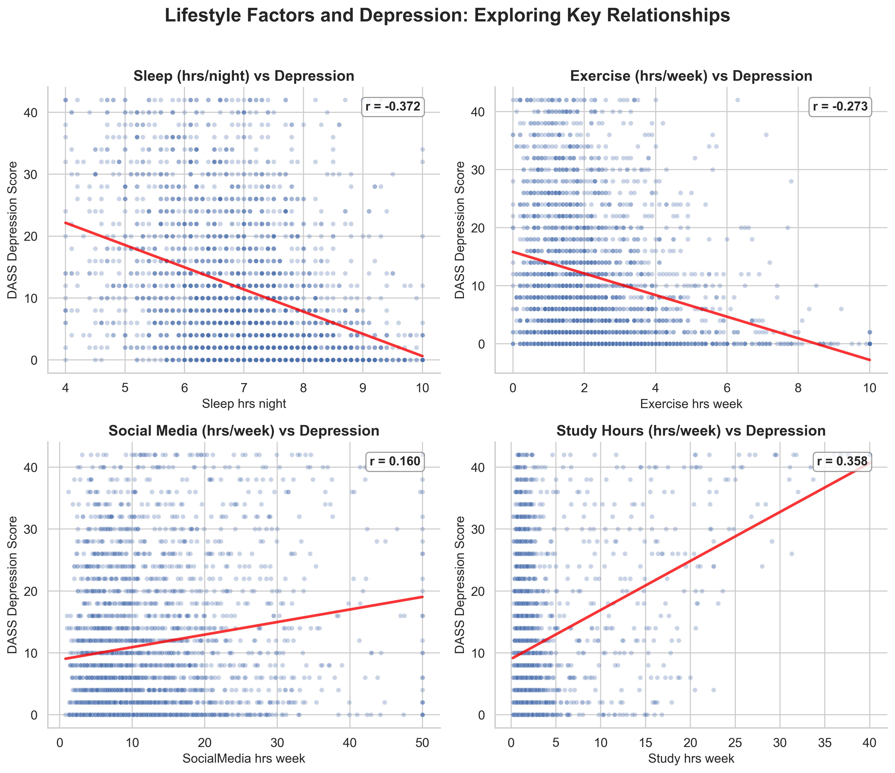
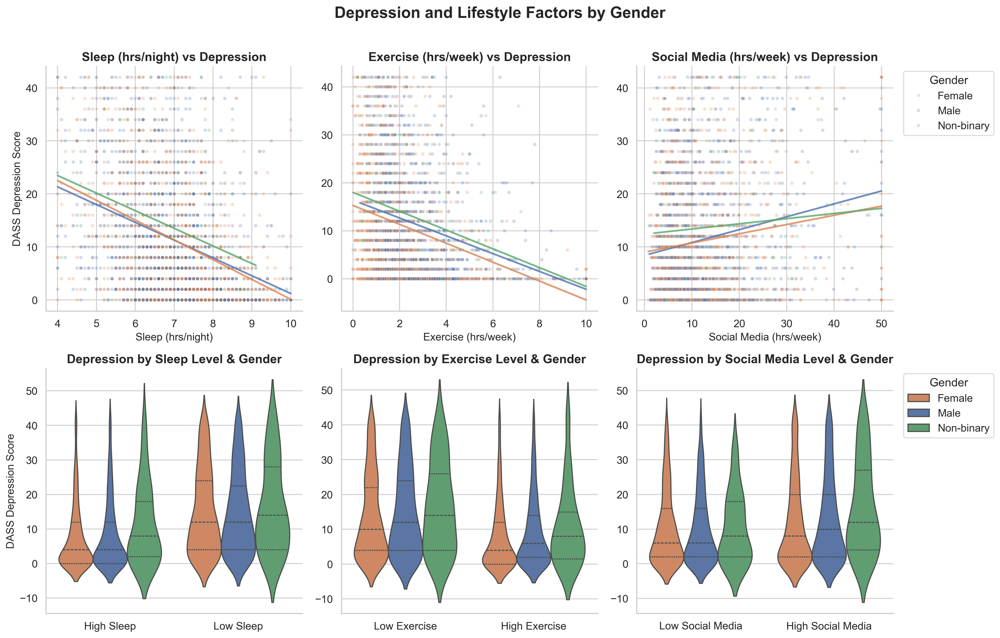
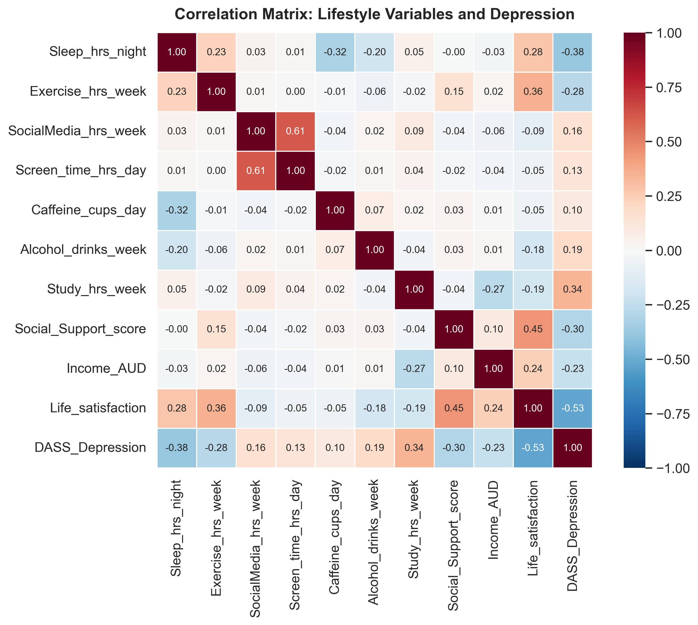
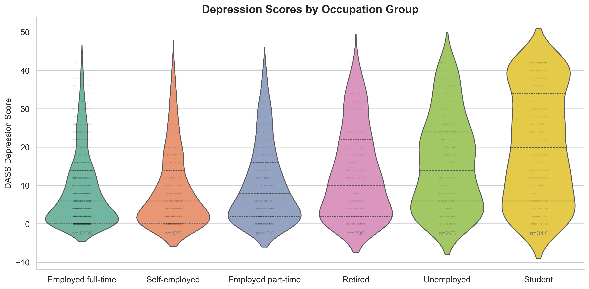

PSYC4411 Week 2 Challenge Lab
Example Group — Week 2

Notebook workflow — 2x2 scatter plots with trend lines and r values

Script workflow — 2x3 scatter + violin plots split by gender

Data exploration — correlation heatmap showing which variables relate to depression

Bonus — group comparison violin plots (high/low lifestyle × gender)
Started by exploring the data — a correlation heatmap of lifestyle variables against DASS Depression scores showed sleep, study hours, and exercise had the strongest associations. Used these findings to plan a focused 2×2 scatter plot figure with trend lines and r values.
Sleep was the strongest lifestyle predictor (r = −0.37). Study hours showed an unexpected positive association (r = +0.36) — possibly reflecting academic stress. Exercise was protective (r = −0.27). Students had the highest depression scores by occupation group (M = 20.3 vs 8.7 for full-time employed).
Exploring the data first made our prompts much more specific — we could name the variables, expected relationships, and even mention the DASS-21 score range and missing values. This produced working code on the first attempt, with zero refinement needed.
Notebooks were better for exploration (seeing results after each cell). Scripts were cleaner for the final product (one command, one output). Splitting into explore + visualise scripts mirrored how data scientists actually work.
Extended the analysis with occupation-based violin plots (students had markedly higher depression) and an annotated figure highlighting key findings with arrows and text boxes. The exploration step made both bonus tasks easier to plan.